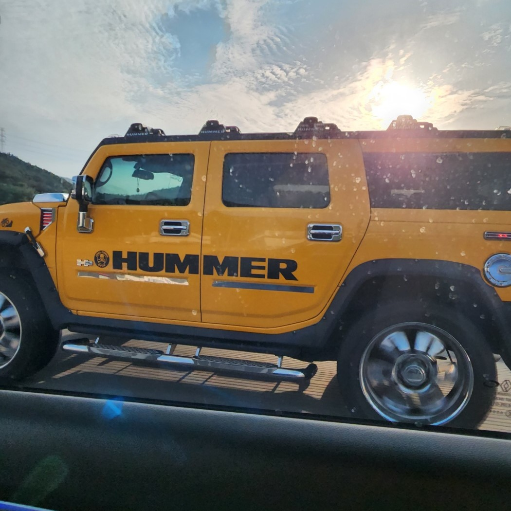

자동차
고속도로에서 마주친 hummer라는 자동차다. 아버지가 어려서부터 자동차를 좋아하셨었기 때문에 직업도 자동차와 관련되어 있다. 나와 함께 있을 때도 자동차와 관련된 이야기나 자동차에 관한 정보들을 많이 알려주셨다. 그래서 나도 자연스레 자동차에 대하여 관심을 가지게 되었다. 도로 위에서 마음에 꼭 맞는 자동차를 찾기가 쉽지 않은데, 이 자동차를 본 순간 나중에는 저런 차를 타고 다니고 싶다고 생각했다.
벚꽃
영남대 정문 쪽 길에 만개한 벚꽃이다. 벚꽃은 매년 보는 거지만 내가 살고 있었던 동네에서는 벚꽃을 이렇게 많이 볼 일이 거의 없었다. 오랜만에 벚꽃이 잔뜩 핀 길을 걷다 보니 어릴 때 가족과 같이 만개한 벚꽃 사이를 걸으며 사진도 찍었던 기억이 떠올랐다. 평소에 꽃 사진이나 풍경 사진을 자주 찍지는 않지만, 벚꽃을 보면 사진을 찍어서 가족이나 친구에게 보여주고 싶은 마음이 들어서 올해도 찍어보았다.
꽃바구니
미용실 안에 장식된 뜨개 꽃바구니다. 나는 중학교 1학년 때부터 뜨개질 방과 후 프로그램을 신청해서 여러 뜨개질 작품을 만들었다. 하지만 꽃을 만들어본 적은 없었기에, 다음에 이런 꽃바구니를 만들어서 선물하면 좋겠다고 생각했다. 나는 평소에도 공예나 그림을 그리면 손재주가 좋다는 이야기를 자주 들었었다. 그래서 나도 내 손으로 무언가를 만들어내는데 만족감이 높았다. 따라서 이런 수공예품들을 보면 구조를 알고 싶고, 나도 만들어보고 싶은 마음이 든다.
선인장

거실 책상 위에 있는 선인장이다. 부모님은 예전부터 동물이나 식물을 키우는 것을 좋아하셨다. 나도 초등학교에 다닐 때부터 학교에서 식물 키우기 활동이나 일지 쓰기 활동 등을 여러 번 했었다. 때문에 전문적인 지식은 없지만, 식물을 키우고 관리하는 일이 재미있게 느껴졌다. 이 선인장도 어머니가 키우고 계시는 선인장이다. 나는 다른 식물들에 비해 선인장이 유독 귀엽게 느껴졌다. 그래서 이런 선인장 하나도 한참을 들여다보았다.
강아지
집에서 키우는 상추라는 반려견이다. 우리 집은 내가 태어나기 전부터도 여러 마리의 반려동물들을 키워왔었다. 상추는 내가 처음으로 날 때부터 지켜봤었다. 또, 이름까지 내가 지은 강아지라서 더욱 정감이 갔다. 어려서부터 반려동물들을 키우다 보니, 내가 키우는 동물에 대한 책임감과 사랑을 배울 수 있었던 것 같다. 지금은 내가 동물 털 알레르기가 생겨서 예전처럼 많이 만질 수는 없다. 그래도 여전히 참고 예뻐해 줄 수 있는 가족이다.
지구
학원가에 있는 링거를 맞고 있는 지구를 표현한 설치미술작품이다. 이 작품은 평소 여기에 다닐 때 볼 수 없었다. 나는 중, 고등학교에 다닐 때, 이런 지구와 관련한 포스터 만들기나 교내에서 진행하는 환경보호 머그잔 디자인 대회 등에 자주 참여 했었다. 그래서 인지 이런 작품들을 보면, 잠깐 멈춰서 이 작품이 표현하고 싶은 이유가 무엇인지에 대해 생각하게 된다. 이 작품은 근처를 오가며 계속 들여다보았는데, 평소에는 이런 설치미술작품을 볼 기회가 잘 없었기에 더 신경이 쓰였다.
새 둥지
집 주변을 산책하다가 이웃집 지붕 밑에서 발견한 새 둥지다. 처음 봤을 때는 둥지의 생김새가 징그러워서 그냥 지나치려 했었다. 하지만 그 안에서 나온 작은 새들이 너무 귀여워서 지나치지 못하고 살펴보았다. 이 새들의 종은 모르겠지만, 이런 작은 새들이 둥지를 지어 그 안에서 새끼를 키운다는 게 신기했다. 나는 대부분의 조류를 좋아하는데 평소에는 이런 새 둥지를 가까이서 볼 수 있는 기회가 거의 없었다. 또, 보통의 새들은 사람이 가까이 다가가면 날아 가버렸기 때문에 이 새들을 가까이서 볼 수 있는 기회가 기꺼웠고, 더 자세히 바라보았다.
레고 장난감
아버지와 함께 조립한 레고 장난감 사진이다. 이 레고는 대형마트 장난감 판매대의 제품 중 유독 마음에 들었던 레고다. 어렸을 때는 이 레고를 조립하는 일이 어려웠다. 하지만 아버지와 함께 조립하다 보니 점점 재미가 붙었으며, 나중에는 어려운 레고를 혼자서도 완성할 수 있게 되었다. 이런 장난감들을 조립하며 점점 손으로 만드는 것에 대해 자신감이 생기고 실력도 늘어 지금의 내 취미들이 완성되었다.
고양이
집 근처에 살며, 자주 밥을 얻어먹고 가는 길고양이다. 우리 집은 여러 강아지를 키웠었지만, 고양이는 키워 본 적이 없다. 이 고양이의 이름은 레옹이다. 처음 보았을 때는 바짝 말라서 몇 번 밥을 챙겨주었었다. 그렇게 보다 보니 정이 들었고, 고양이가 찾아올 때마다 반가워서 이름을 지어주고 밥을 챙겨주었다. 그러다 보니 레옹도 경계를 풀고 집에서 잠도 자고, 가족들에게 다가와 애교도 부려서 최근엔 꽤 친해졌다. 이 사진 또한 다가와 쳐다보는 레옹을 촬영한 사진이다.
개구리 그림
본가에서 찾은 개구리 그림이다. 입시 미술을 시작하기 전에 다니던 학원에서 그렸던 인터넷에서 찾은 개구리 그림의 모작이다. 이 그림을 보고 입시 전 그림 스타일을 상기할 수 있어서 좋았다. 내가 개구리를 좋아하기 때문에 많은 그림 중 이 그림이 눈에 띄었다. 또, 이 그림을 그릴 때 너무 재미있게 그렸던 기억이 떠올랐으며 다른 그림들과 달리 내가 따라 그릴 그림부터 내가 고르고 선생님의 도움 없이 완성했던 그림이라서 사진으로 남기고 싶었다. 지금 보면 잘 그린 그림은 아니지만 소중한 그림이다.